01 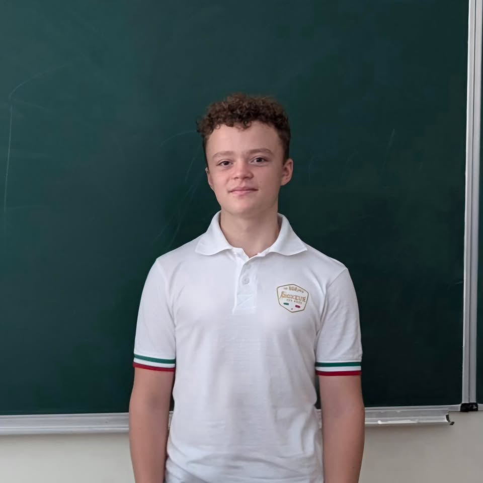 Achiruș Constantin Constantin face parte din grupa P-2432 de la CEITI. 01 Achiruș Constantin Descrierea personală va fi completată în curând.
02 Batițchi Nicolae Nicolae face parte din grupa P-2432 de la CEITI. 02 Batițchi Nicolae Descrierea personală va fi completată în curând.
03 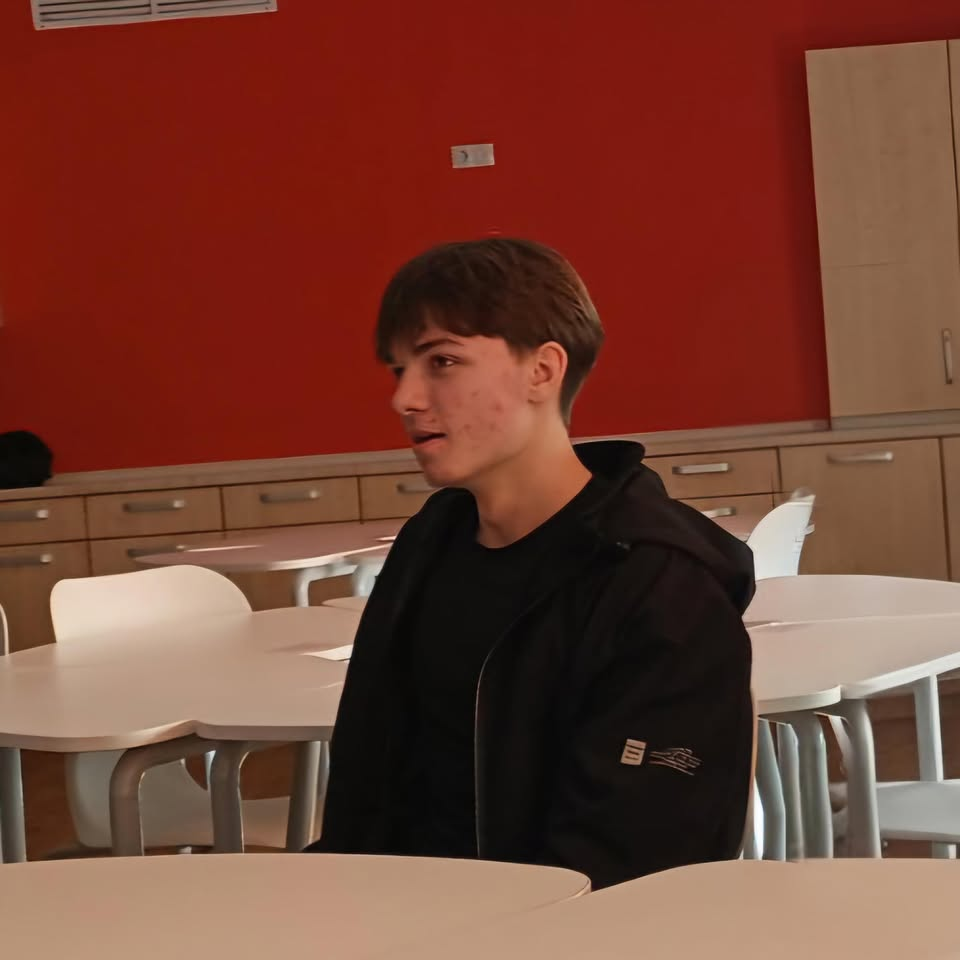 Beșliu Dan Dan face parte din grupa P-2432 de la CEITI. 03 Beșliu Dan Descrierea personală va fi completată în curând.
04 Bragari Eduard Eduard face parte din grupa P-2432 de la CEITI. 04 Bragari Eduard Descrierea personală va fi completată în curând.
05 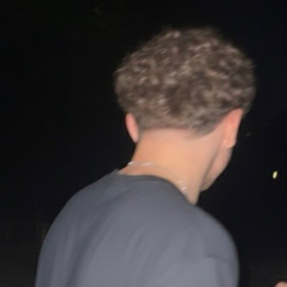 Caraman Pavel Pavel face parte din grupa P-2432 de la CEITI. 05 Caraman Pavel Descrierea personală va fi completată în curând.
06 Ciutac Adriana Adriana face parte din grupa P-2432 de la CEITI. 06 Ciutac Adriana Descrierea personală va fi completată în curând.
07 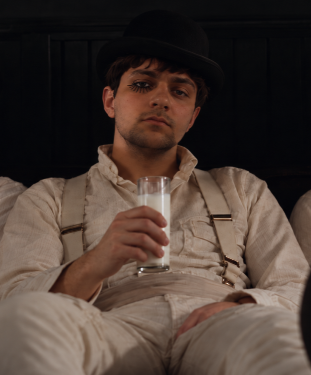 Cîrlan Ion Ion face parte din grupa P-2432 de la CEITI. 07 Cîrlan Ion Descrierea personală va fi completată în curând.
08 Comanac Patricia Patricia face parte din grupa P-2432 de la CEITI. 08 Comanac Patricia Descrierea personală va fi completată în curând.
09 Corciu Alexandru Alexandru face parte din grupa P-2432 de la CEITI. 09 Corciu Alexandru Descrierea personală va fi completată în curând.
10 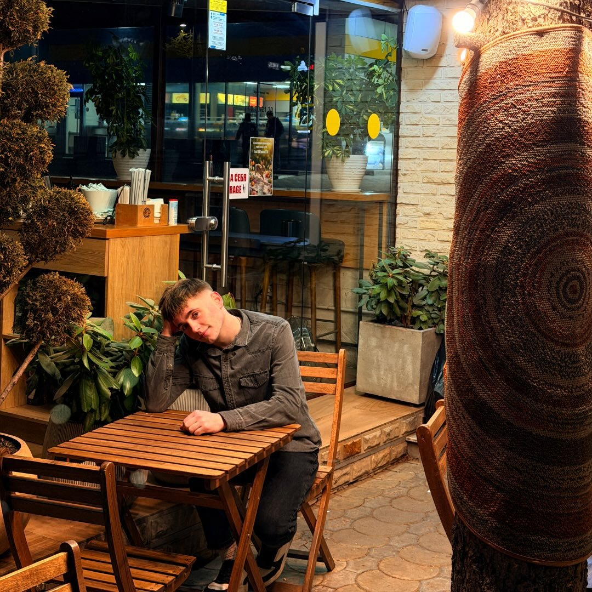 Crețu Sergiu Sergiu face parte din grupa P-2432 de la CEITI. 10 Crețu Sergiu Descrierea personală va fi completată în curând.
11 Garabajiu Gheorghe Gheorghe face parte din grupa P-2432 de la CEITI. 11 Garabajiu Gheorghe Descrierea personală va fi completată în curând.
12 Găină Vladislav Vladislav face parte din grupa P-2432 de la CEITI. 12 Găină Vladislav Descrierea personală va fi completată în curând.
13 Gojan Marin Marin face parte din grupa P-2432 de la CEITI. 13 Gojan Marin Descrierea personală va fi completată în curând.
14 Grigoriță Salomeia Salomeia face parte din grupa P-2432 de la CEITI. 14 Grigoriță Salomeia Descrierea personală va fi completată în curând.
15 Istrati Oxana Oxana face parte din grupa P-2432 de la CEITI. 15 Istrati Oxana Descrierea personală va fi completată în curând.
16 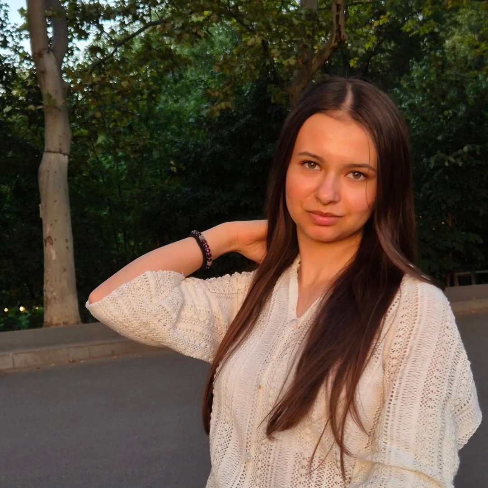 Jumiga Virineea Virineea face parte din grupa P-2432 de la CEITI. 16 Jumiga Virineea Descrierea personală va fi completată în curând.
17 Livadaru Constantin Constantin face parte din grupa P-2432 de la CEITI. 17 Livadaru Constantin Descrierea personală va fi completată în curând.
18 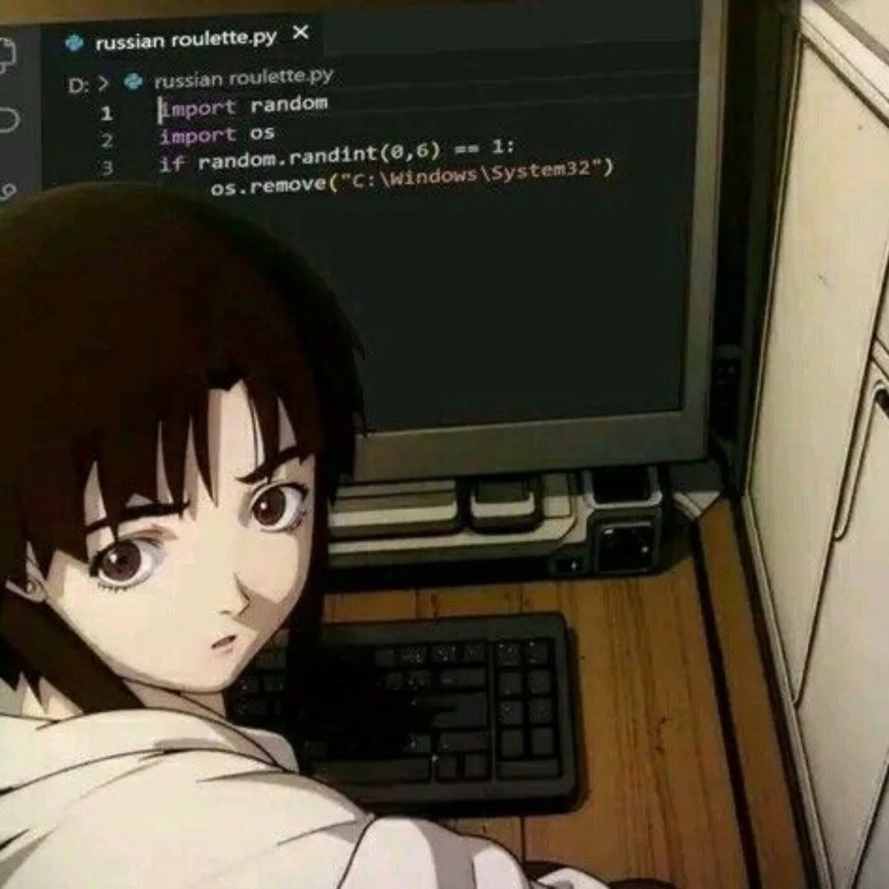 Macari Nicolae Nicolae face parte din grupa P-2432 de la CEITI. 18 Macari Nicolae Descrierea personală va fi completată în curând.
19 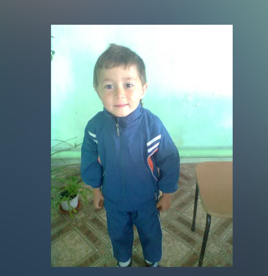 Medinschi Vladislav Vladislav face parte din grupa P-2432 de la CEITI. 19 Medinschi Vladislav Descrierea personală va fi completată în curând.
20 Miron Dragoș Dragoș face parte din grupa P-2432 de la CEITI. 20 Miron Dragoș Descrierea personală va fi completată în curând.
21 Mironova Ecaterina Ecaterina face parte din grupa P-2432 de la CEITI. 21 Mironova Ecaterina Descrierea personală va fi completată în curând.
22 Munteanu Alexandrina Alexandrina face parte din grupa P-2432 de la CEITI. 22 Munteanu Alexandrina Descrierea personală va fi completată în curând.
23 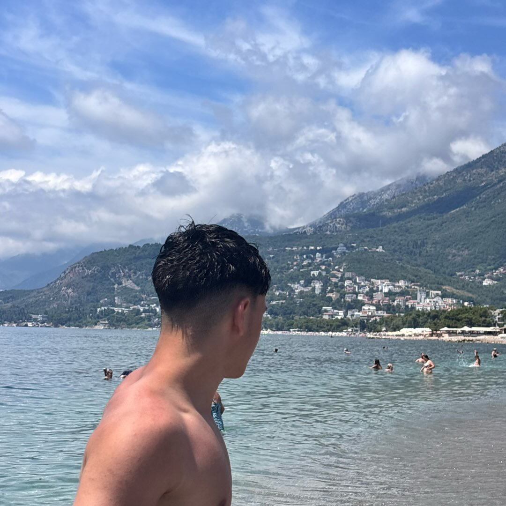 Nedelco Maxim Maxim face parte din grupa P-2432 de la CEITI. 23 Nedelco Maxim Descrierea personală va fi completată în curând.
24 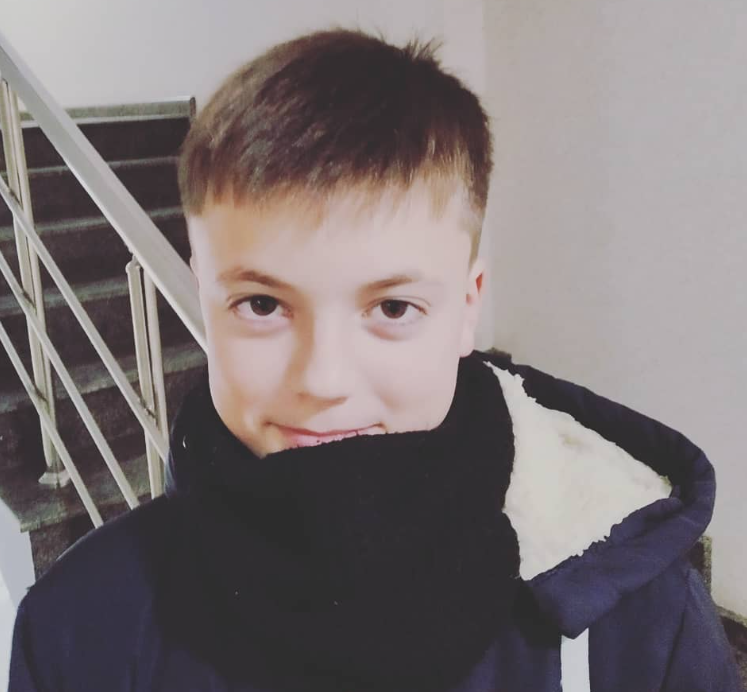 Nicolai Petru Petru face parte din grupa P-2432 de la CEITI. 24 Nicolai Petru Descrierea personală va fi completată în curând.
25 Nitrean Remos Remos face parte din grupa P-2432 de la CEITI. 25 Nitrean Remos Descrierea personală va fi completată în curând.
26 Orlețchi Bogdan Bogdan face parte din grupa P-2432 de la CEITI. 26 Orlețchi Bogdan Descrierea personală va fi completată în curând.
27 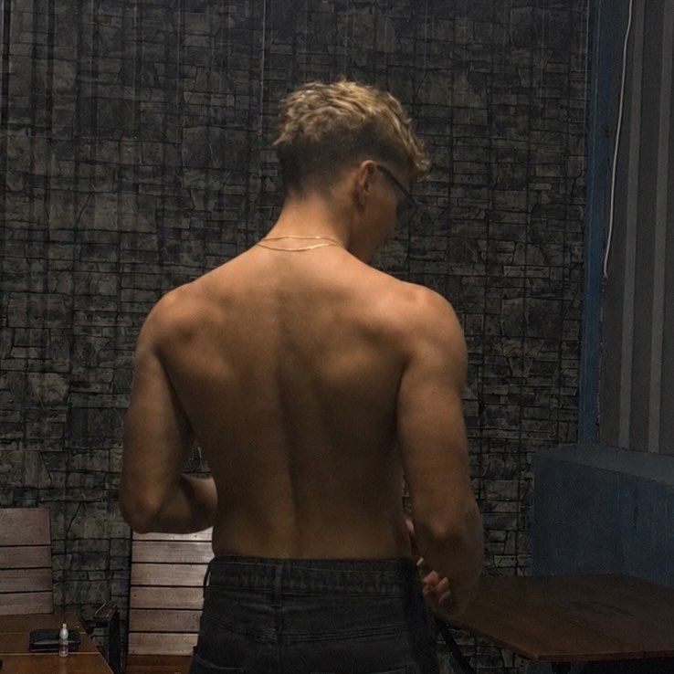 Pascaru Gabriel Gabriel face parte din grupa P-2432 de la CEITI. 27 Pascaru Gabriel Descrierea personală va fi completată în curând.
28 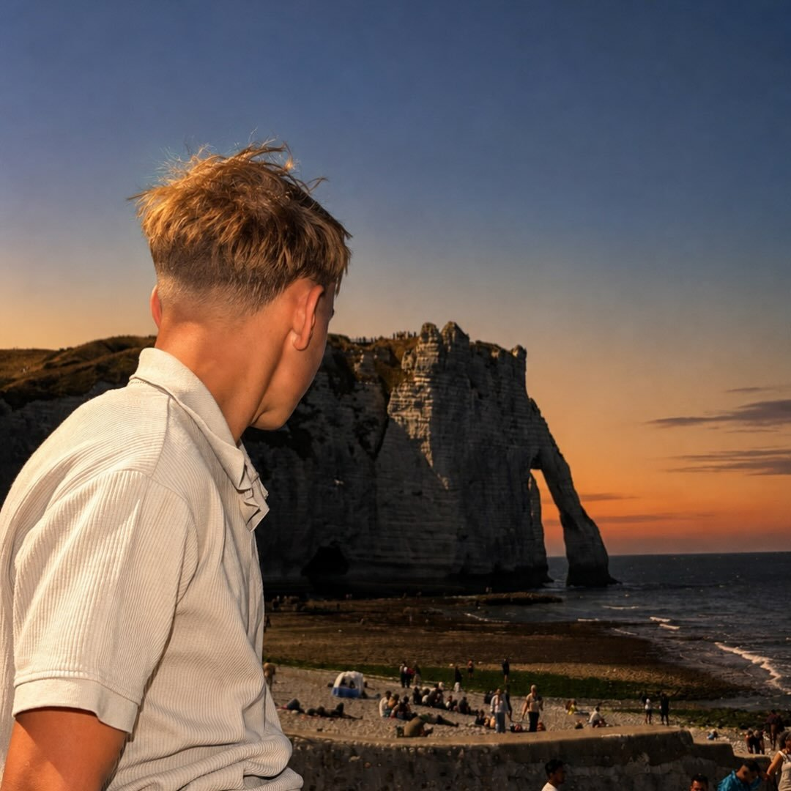 Poclitar Artemie Artemie face parte din grupa P-2432 de la CEITI. 28 Poclitar Artemie Descrierea personală va fi completată în curând.
29 Postoroncă Sergiu Sergiu face parte din grupa P-2432 de la CEITI. 29 Postoroncă Sergiu Descrierea personală va fi completată în curând.
30 Prijilevschi Daniel Daniel face parte din grupa P-2432 de la CEITI. 30 Prijilevschi Daniel Descrierea personală va fi completată în curând.
31 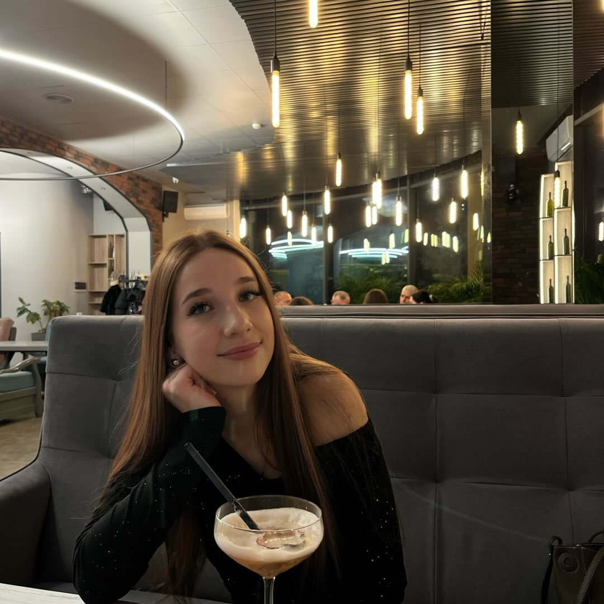 Roman Mădălina Mădălina face parte din grupa P-2432 de la CEITI. 31 Roman Mădălina Descrierea personală va fi completată în curând.
32 Sava Damian Damian face parte din grupa P-2432 de la CEITI. 32 Sava Damian Descrierea personală va fi completată în curând.
33 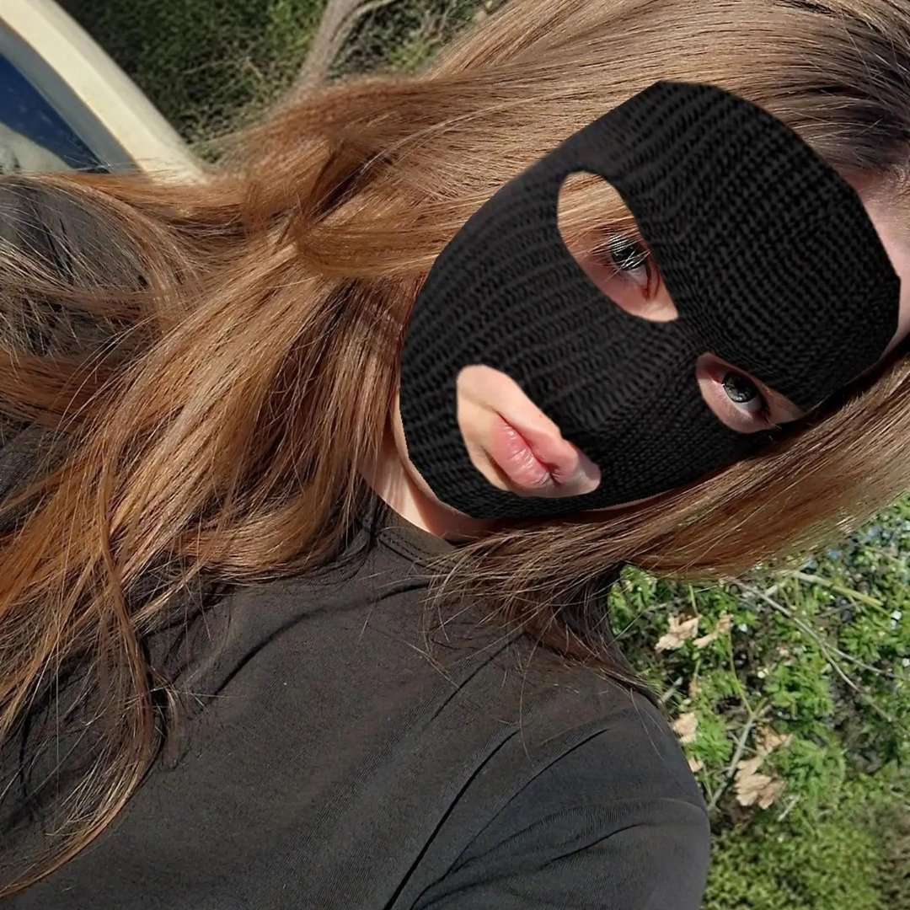 Stepan Gabriela Gabriela face parte din grupa P-2432 de la CEITI. 33 Stepan Gabriela Descrierea personală va fi completată în curând.
34 Stici Denis Denis face parte din grupa P-2432 de la CEITI. 34 Stici Denis Descrierea personală va fi completată în curând.
35 Tilipeț Dumitru Dumitru face parte din grupa P-2432 de la CEITI. 35 Tilipeț Dumitru Descrierea personală va fi completată în curând.